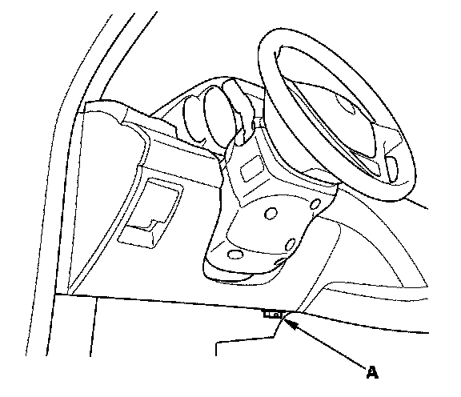

With Manufacturer's Scan Tool
Erasing the DTC Memory With the HDSNOTE: Make sure the battery is fully charged before you begin.
1. Make sure the ignition switch is OFF.

2. Connect the HDS to the DLC (A).
3. Turn the ignition switch ON (II).
4. Make sure the HDS communicates with the vehicle and the SRS unit. If it does not, troubleshoot the DLC circuit.
5. In the SRS MENU of the HDS, select SRS, then DTC to erase DTC(s).
6. Turn the ignition switch OFF, and wait for 10 seconds.
7. Disconnect the HDS from the DLC.